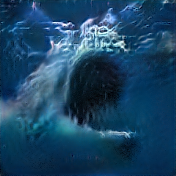
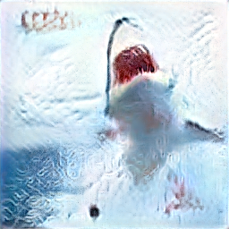
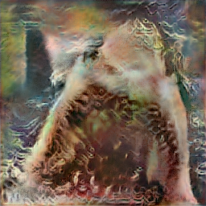
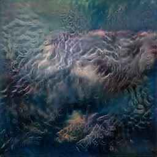
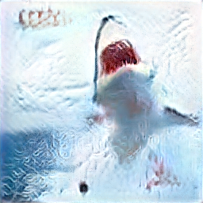
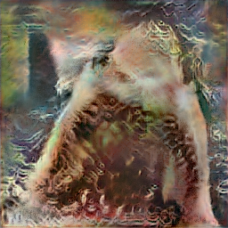
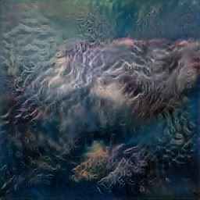

Album art generation
SampleRNN, which I've shown so far, is a model for unconditional music generation. NVIDIA's StyleGAN2stylegan2 is a model for unconditional image generation. I'll use StyleGAN2 to create the fake album art for 1000sharks. Given that both are unconditional waveform generators (audio = 1D waveform with an implicit time axis, image = 2D matrix, non-temporal), the training and generation procedures are broadly similar to what has been described.
Image pre-preprocessing script
StyleGAN2 expects the training data to be square images with the same power-of-two dimension. I wrote a Python script that automatically extracts the square middle dim pixels of an image and saves them as png files using Pillowpil:
from PIL import Image, ImageOps
seq = 0
# dim is a user-supplied argument
for p in args.inpaths:
for image in os.listdir(p):
img = Image.open(os.path.join(p, image))
thumbnail = ImageOps.fit(
img,
(args.dim, args.dim),
Image.ANTIALIAS
)
thumbnail.save(os.path.join(args.outpath, '{0}.png'.format(seq)))
seq += 1
I've committed this script (crop_images.py) to my fork of StyleGAN2my-stylegan2-fork. One thing to note is that I had to run conda install libwebp in my Conda environment before installing Pillow to support the webp image format.
Early on this page I mentioned vague "difficulties" when relying on older machine learning libraries. I encountered many of these with StyleGAN2:
Preprocessing, training, and generation commands
The training data consists of shark images (saved from a Google image search), and heavy metal album covers (saved from the following articlearticle https://www.loudersound.com/features/the-50-best-death-metal-albums-ever.
After downloading these to a directory, I ran the following commands:
# create 256x256 middle cropped images from sharks and album covers
$ python crop_images.py --dim=256 ./output-images/ ./shark-images/ ./metal-album-covers/
# preprocess cleaned cropped images using stylegan2's own tool
$ python dataset_tool.py create_from_images datasets/1000sharks/ ./output-images/
# train for config-e and kimg=1000
$ python run_training.py --data-dir=./datasets/ --dataset=1000sharks --config=config-e --total-kimg=1000
# generate 1000 images, randomly seeded, for curation
$ python run_generator.py generate-images --seeds=0-999 --truncation-psi=1.0 --network=results/00008-stylegan2-1000sharks-1gpu-config-e/network-final.pkl
I chose the training parameters config-e (the second-best configuration - config-f is the best configuration in StyleGAN2 but is a larger neural network that's much slower to train - these are explained TODO HERE), with kimg=1000 (this is similar to the epochs of SampleRNN, in that more is probably better and increases the training time).
After 31 hours of training, the model was done:
tick 118 kimg 951.7 lod 0.00 minibatch 32 time 1d 06h 10m sec/tick 845.5 sec/kimg 104.85 maintenance 0.0 gpumem 5.0
tick 119 kimg 959.7 lod 0.00 minibatch 32 time 1d 06h 24m sec/tick 845.2 sec/kimg 104.81 maintenance 0.0 gpumem 5.0
tick 120 kimg 967.8 lod 0.00 minibatch 32 time 1d 06h 38m sec/tick 844.9 sec/kimg 104.78 maintenance 0.0 gpumem 5.0
network-snapshot-000967 time 11m 39s fid50k 192.4708
tick 121 kimg 975.9 lod 0.00 minibatch 32 time 1d 07h 04m sec/tick 844.7 sec/kimg 104.76 maintenance 712.7 gpumem 5.0
tick 122 kimg 983.9 lod 0.00 minibatch 32 time 1d 07h 18m sec/tick 845.8 sec/kimg 104.89 maintenance 0.0 gpumem 5.0
tick 123 kimg 992.0 lod 0.00 minibatch 32 time 1d 07h 32m sec/tick 845.7 sec/kimg 104.87 maintenance 0.0 gpumem 5.0
tick 124 kimg 1000.1 lod 0.00 minibatch 32 time 1d 07h 47m sec/tick 845.6 sec/kimg 104.87 maintenance 0.0 gpumem 5.0
network-snapshot-001000 time 11m 41s fid50k 195.7975
dnnlib: Finished training.training_loop.training_loop() in 1d 07h 59m.
The logs to stdout are similar to SampleRNN (kimg = epoch, fid50k = accuracy measure where lower is betterhttps://machinelearningmastery.com/how-to-implement-the-frechet-inception-distance-fid-from-scratch/).
Curated album art
There are 9 results I liked the most and included in the project:



 





Results & conclusion
References
- mlacoustics (citations.bib)
- wavenetpaper (citations.bib)
- samplernnpaper (citations.bib)
- magentaddsp (citations.bib)
- dadabots (citations.bib)
- new ref: machine learning reproducability crisis https://petewarden.com/2018/03/19/the-machine-learning-reproducibility-crisis
- prism (citations.bib)
- prism-blog (citations.bib)
- prism gh commits
- my fork
- tf weird fix https://github.com/search?q=%22tf.config.experimental.set_memory_growth%28physical_devices%5B0%5D%2C+enable%3DTrue%29%22&type=issues
- conda
- dadabots curation
- librosa trim https://librosa.org/doc/main/generated/librosa.effects.trim.html
- chromaprint https://acoustid.org/chromaprint
- https://medium.com/@shivama205/audio-signals-comparison-23e431ed2207